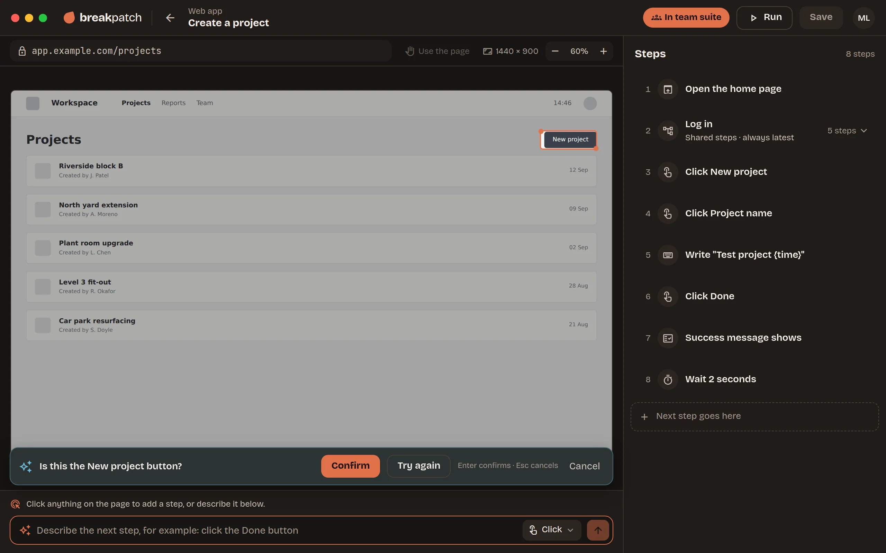

breakpatch
Your screens never leave your Mac
UI testing that runs on your Mac.
Click through your web app. The AI names each step. Replay it and see what broke. No code.
Free and open source.
Click through your web app. The AI names each step. Replay it and see what broke. No code.
